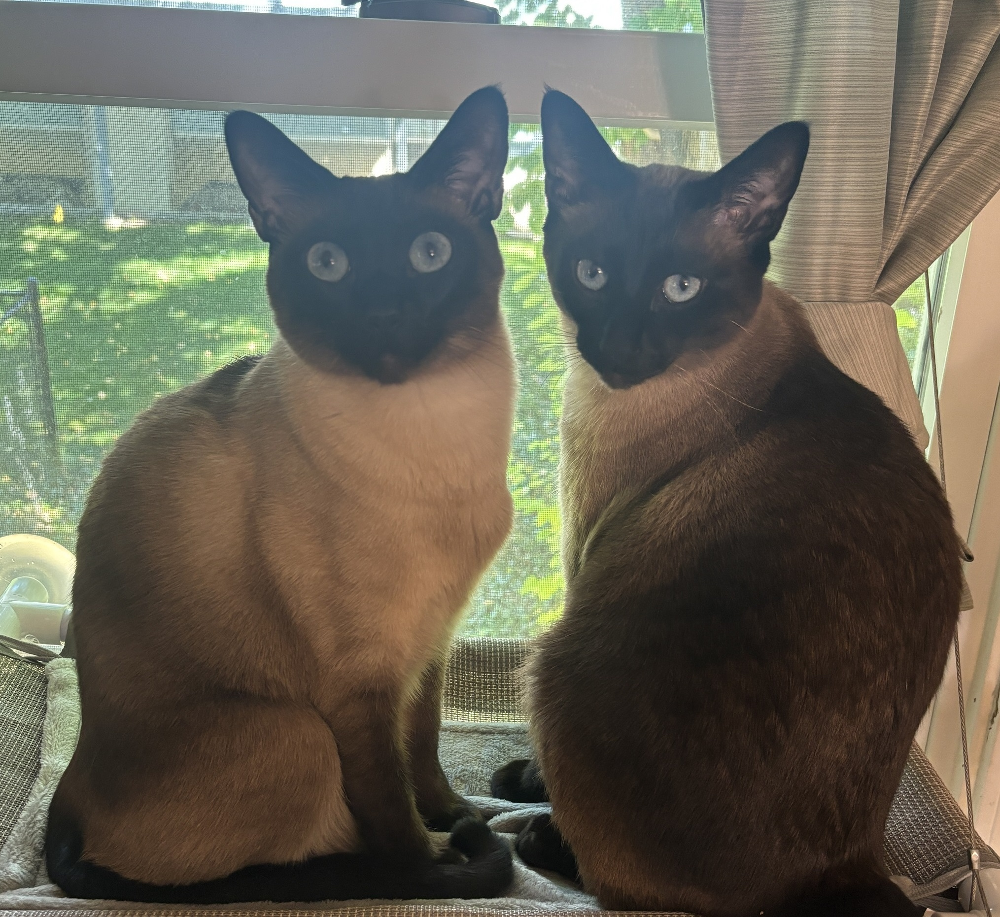

Fame and Fortune
The two greatest creatures god ever put on this earth

Previous
Next
Fame and Fortune
Here's a time line of Fame and Fortune:
June 2021
- Born Newburg, New York
Aug 2021
- Rescued during hurricane Henri and brought to Plymouth Massachusetts